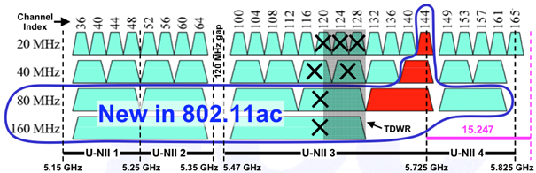

Staat de router in n- of ac-modus, dan kan hij aan channel bonding doen. In plaats van één kanaal gebruikt hij er twee die tegen elkaar aan liggen. De beschikbare bandbreedte verdubbelt daardoor tot ongeveer 40 MHz, en de snelheid in theorie ook.
In ac-modus gaan sommige routers tot acht kanalen samen. De bandbreedte is dan 160 MHz en de snelheid in theorie acht keer die van één kanaal.

In de router vind je dit terug onder de instelling Channel Width, waar je het aan- of uitzet.
Een kanaal van 40 MHz neemt twee keer zoveel plaats in als een van 20 MHz, en die plaats is gedeeld met je buren. Op de 2,4 GHz-band, waar er weinig ruimte is en veel netwerken zitten, betekent bonding vooral dat je met meer netwerken tegelijk overlapt. Een kanaal van 20 MHz levert daar in de praktijk meer op.